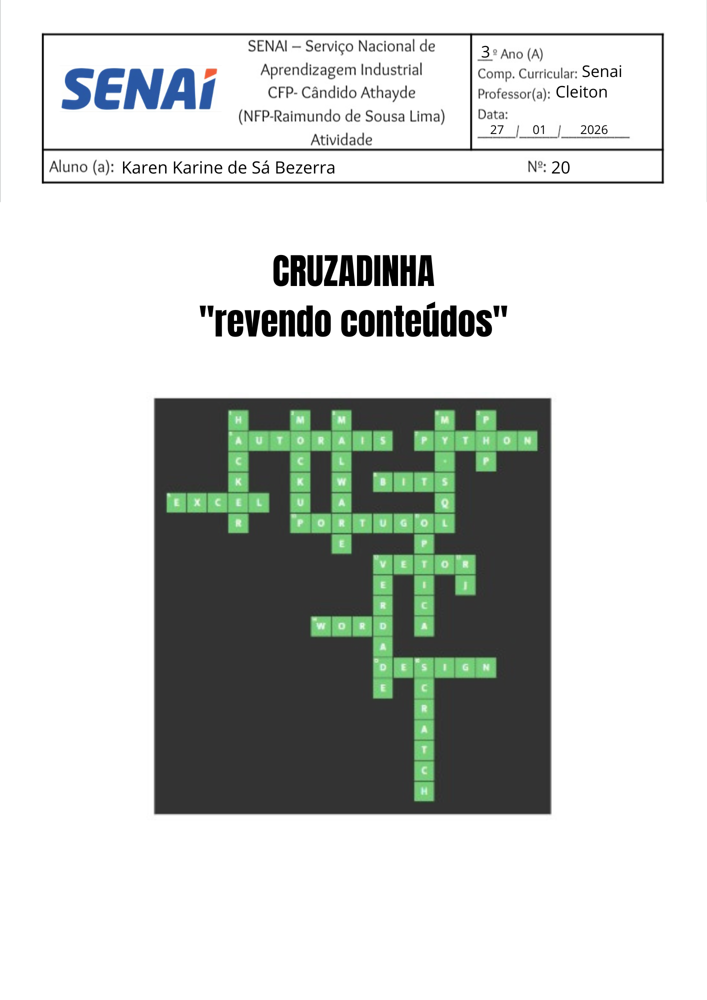
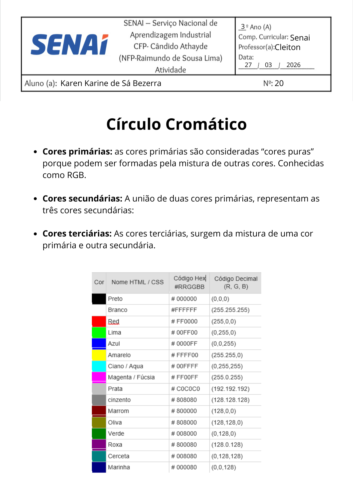
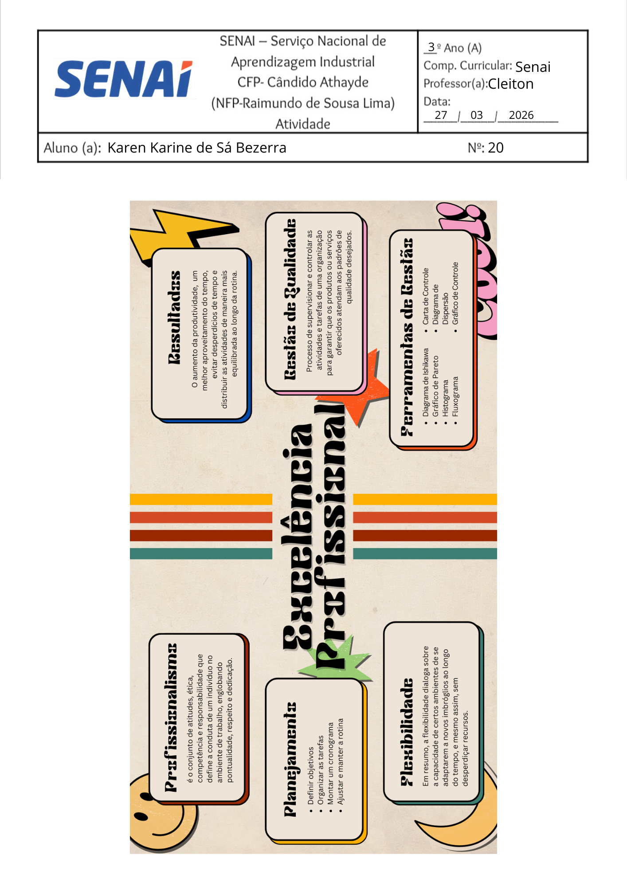

Palavra cruzada (27/01)

Projeto de baixa fidelidade (29/01)

Mapa mental de ética no trabalho(03/02)

Pesquisa sobre Eficiência, eficácia e melhoria contínua (11/02)

Tipos de tags e suas funções no html e css(19/02)

Mapa mental sobre organização no trabalho (05/03)

Pesquisa sobre os tipos de cores (06/03)

Portfólio de imagens(23/03)

Boneco de ia (24/03)

Slides sobre Profissionalismo(27/03)

Mapa mental sobre Profissionalismo(27/03)
